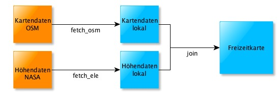

Workflow zur Erstellung einer Freizeitkarte basierend auf selbst zugeschnittenen Extrakten (Beispiel: Freizeitkarte_DEU+):
{Natürlich noch nicht korrekt und nicht komplett}Komplettierung der Entwicklungsumgebung und Vorbereitung der Verzeichnisse:
1. bootstrap:
- (Einmaliges) Komplettieren der Entwicklungsumgebung
- Laden der bounds- und sea-Dateien
- Kommando: perl mt.pl bootstrap
2. create:
Diese Aktion sollte auf beide relevanten Regionen ausgeführt werden, die Region, welche unsere gewünschte Karte enthält (meistens EUROPE) und die gewünschte Karte selbst. Die Aktion ist nicht zwingend nötig, die Verzeichnisse werden auch so angelegt, aber mit dieser Aktion werden alte Daten gelöscht:
- Löschen von "alten" Daten
- Neuanlegen von erforderlichen Verzeichnissen
- Kommando(s):
perl mt.pl create Freizeitkarte_EUROPE
perl mt.pl create Freizeitkarte_DEU+

3a. fetch_osm:
- Laden der OSM-Kartendaten für die Region, welche unsere gewünschte Karte enthält, meistens EUROPE
- Datenquelle: OSM-Extrakt von geofabrik
- der Download erfolgt via Utility "curl" (OS X) oder "wget" (Windows)
- Kommando: perl mt.pl fetch_osm Freizeitkarte_EUROPE
3b. extract_osm:
- Zuschneiden der heruntergeladenen OSM Daten auf die gewünschte Grösse/Karte
- Kommando: perl mt.pl extract_osm Freizeitkarte_DEU+
3c. fetch_ele:
- Laden der Höhendaten (elevations) für die gewünschte Karte, in unserem Beispiel DEU+
- Datenquelle: www.freizeitkarte-osm.de
- der Download erfolgt via Utility "curl" (OS X) oder "wget" (Windows)
- Kommando: perl mt.pl fetch_ele Freizeitkarte_DEU+
4. join:
- Zusammenführen der Karten- und Höhendaten
- auch erforderlich wenn nur Kartendaten verarbeitet werden sollen
- Kommando: perl mt.pl join Freizeitkarte_DEU+

5. split:
- Aufteilen (split) der OSM-Daten in Kacheln
- Kommando: perl mt.pl split Freizeitkarte_DEU+
6. build:
- Erzeugen einer individuellen Konfigurationsdatei
- Erzeugen aller Karten-Images (img, mdx, tdb)
- Kommando: perl mt.pl build Freizeitkarte_DEU+

7a. gmap:
- Erzeugen eines individuellen TYP-Files
- Erzeugen einer gmap-Datei zur Installation unter OS X ("Garmin MapManager")
- Kommando: perl mt.pl gmap Freizeitkarte_DEU+
7b. nsis:
- Erzeugen eines individuellen TYP-Files
- Erzeugen einer Input-Datei für den NSIS-Compiler
- Erzeugen einer ausführbaren Windows-Installerdatei
- dieser Schritt muß unter Windows ausgeführt werden
- Kommando: perl mt.pl nsis Freizeitkarte_DEU+
7c. gmapsupp.img:
- Erzeugen eines gmapsupp-Image-Datei
- Kommando: perl mt.pl gmapsupp Freizeitkarte_DEU+
7d. ImageDir:
- Erzeugen der von Qlandkarte GT (und anderen Anwendungen) lesbaren Verzeichniss Struktur
- Kommando: perl mt.pl imagedir Freizeitkarte_DEU+